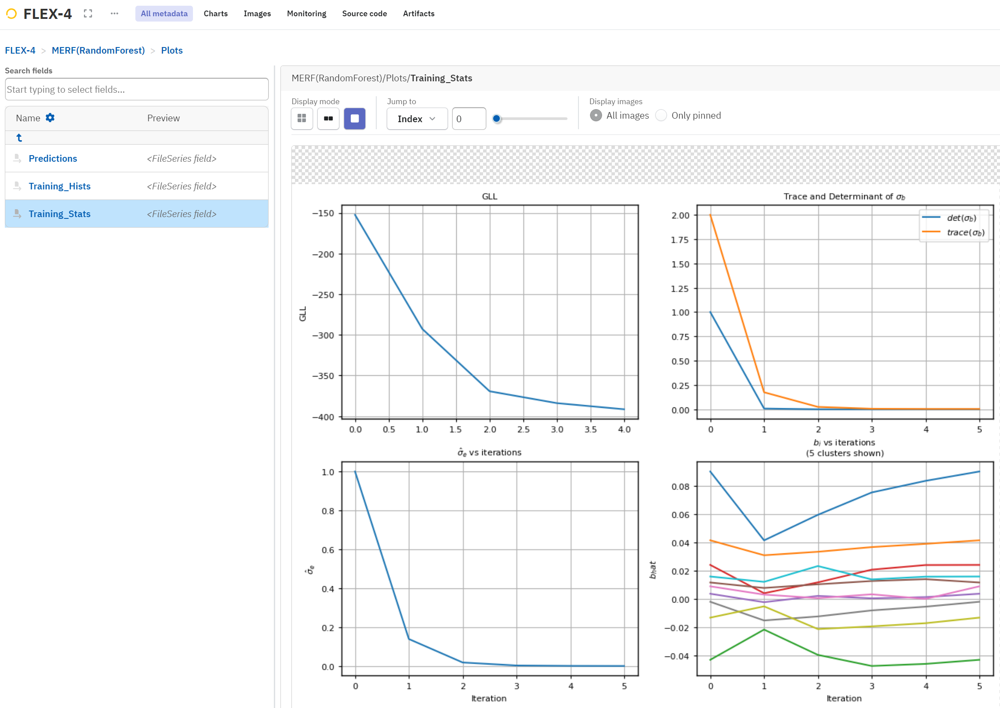

Model Random Effects
Working with Mixed Effects Models
To this point, we used regression models to make predictions based on the features in the data. We used basic kFold cross validation [1] to tune the hyperparameters of our random forest regressor and [2] estimate model generalization.
However, sometimes the data is not only structured by the feature matrix and the target values but also defined by a data hierarchy. This is common in study data that has been generated by participants. Mixed effects models are a type of statistical model used to analyze hierarchical data, where the data is organized into groups or clusters. In mixed effects models, both fixed and random effects are included in the model to account for the variation within and between the groups. The fixed effects are the same for all groups, while the random effects vary between the groups. Mixed effects models are useful when the data has a nested or hierarchical structure, such as in longitudinal studies, where measurements are taken over time on the same individuals, or in clustered data, where individuals are grouped together based on some characteristic. Mixed effects models can provide more accurate estimates of the effects of predictors and can account for the correlation between observations within the same group.
Choosing a split
In order to respect the hierarchical structure of the data one has to choose an appropriate method for the cross validation splits.
The choice of split method in mixed effects models can have a significant impact on the model performance and the interpretation of the results. In hierarchical data, the observations are often clustered or grouped together, and the choice of split method can affect how the data is partitioned into training and validation sets. For example, if the data is clustered by geographic region, a split method that takes into account the clustering structure, such as the GroupKFold or StratifiedGroupKFold methods, may be more appropriate than a method that ignores the clustering structure, such as the KFold method. The choice of split method can also affect the estimation of the model parameters and the prediction accuracy of the model. Therefore, it's important to carefully consider the choice of split method when fitting mixed effects models to hierarchical data.
flexcv makes chosing and switching between split methods straight forward. You can simply exchange methods from the method calls.
from flexcv import CrossValidation
cv = CrossValidation().set_splits(split_out="GroupKFold",split_in="GroupKFold")
flexcv solves the problems, where different splitting methods would not share signatures, internally, so you can concentrate on the research questions and do not have to jump into implementation.
Stratification
In addition to that, we have to talk about stratification. Stratifying the grouping variable guarantees that both training and validation sets include a well-distributed sample of the groups or clusters within the data. This step is instrumental in reducing the likelihood of the model overfitting to specific groups or clusters, ultimately enhancing the model's generalization performance.
Similarly, stratifying the target variable ensures that the training and validation sets encompass a representative sample of target variable values. By doing so, it minimizes the risk of overfitting to particular ranges of target variable values, contributing to improved generalization performance. Usually this is the go-to way for multiclass problems. We implemented stratification for continuous targets by performing stratification based on a discretized copy of the continuous target. The data is discretized into percentiles and the distribution of the percentiles is preserved. The folding is, of course, taken out on the continuous target variable again.
Furthermore, our adapted stratification approach for continuous target variables ensures the inclusion of representative target variable values in both training and validation sets, even when the target variable is continuous. This refinement significantly enhances the model's generalization performance and mitigates the risk of overfitting to specific target variable value ranges.
In summary, stratifying both the grouping variable and the target variable is crucial for boosting the generalization performance of mixed effects models and reducing the risk of overfitting, especially when dealing with small sample sizes.
Choosing a model type
For mixed effects modeling, flexcv offers two great possibilities:
- Linear Mixed Effects Models (LMM)
- Mixed Effects for Random Forests (MERF)
A linear mixed effects model, often abbreviated as LMM or just mixed model, is a statistical approach used to analyze data that exhibit both fixed and random effects. It is particularly valuable in situations where the data involves nested or hierarchical structures, repeated measures, or other forms of dependency.
The random effects capture the random variability or "nuisance" components in your data. Random effects are used to account for correlations and variations that may be specific to particular groups or clusters within your data. These effects are often assumed to follow a normal distribution.
The primary advantage of a linear mixed effects model is its ability to model and account for the variability within the data due to both fixed and random effects. This allows for more accurate and efficient modeling in cases where traditional linear regression may not be appropriate, such as when dealing with repeated measurements on the same subjects or when the data has a hierarchical structure.
Linear mixed effects models are widely used in various fields, including biology, psychology, social sciences, and economics, to address complex data analysis problems. They provide a flexible and powerful framework for understanding the underlying structure of data and making meaningful inferences.
flexcv provides a wrapper class to use LMM inside a nested cross validation pipeline alongside with other machine learning models.
Here is an example how you would apply an LMM to grouped sample data.
In our implementation, we think of the model names passed as keys in the ModelMappingDict as referring to base estimators, i. e. fixed effects models. Mixed effects models often make use of base estimators. Therefore, we just append the LMM to the linear model's configuration.
from flexcv import CrossValidation
from flexcv.models import LinearModel, LinearMixedEffectsModel
from flexcv.synthesizer import generate_regression
X, y, group, random_slopes =generate_regression(
3,100,n_slopes=1,noise_level=9.1e-2
)
cv =CrossValidation()
results = (
cv.set_data(X, y, group, random_slopes)
.set_splits(n_splits_out=3)
.add_model(LinearMixedEffectsModel)
.perform()
.get_results()
)
MERF
The MERF class can be used to optimize any base estimator for mixed effects utilizing the expectation maximization (EM) algorithm. In the cross validation process, the base estimator is passed to MERF after hyperparameter tuning. There, a new instantance is created and fit to the data using the EM algorithm.
MERF is added to every estimator (i.e. model) in the model mapping of the CrossValidation class where add_merf is set to True. This is can be done globally for every model that is passed to the CrossValidation class instance by setting it to True in the set_merf() method. You can also set add_merf for every model in the model mapping individually.
In the following example we will use a random forest regressor as base estimator for MERF and use the global setting to add MERF to every model in the model mapping.
In the CrossValidationResults object that is returned by get_results() the MERF instance is always named with the scheme "MERF(BaseEstimatorName)". In this case, the MERF instance is named "MERF(RandomForestRegressor)".
import optuna
from sklearn.ensemble import RandomForestRegressor
from flexcv import CrossValidation
from flexcv.merf import MERF
from flexcv.model_postprocessing import RandomForestModelPostProcessor
from flexcv.synthesizer import generate_regression
# lets start with generating some clustered data
X, y, group, random_slopes =generate_regression(
3, 50, n_slopes=1, noise_level=9.1e-2
)
# define our hyperparameters
params = {
"max_depth": optuna.distributions.IntDistribution(5, 100),
"n_estimators": optuna.distributions.CategoricalDistribution([10]),
}
cv =CrossValidation()
results = (
cv.set_data(X, y, group, random_slopes)
.set_inner_cv(3)
.set_splits(n_splits_out=3)
.add_model(model_class=RandomForestRegressor, requires_inner_cv=True, params=params, post_processor=RandomForestModelPostProcessor)
.set_merf(True, em_max_iterations=5)
.perform()
.get_results()
)

Neptune makes it easy to keep track of the training process and observe convergence of the expectation maximization algorithm that is used in MERF.